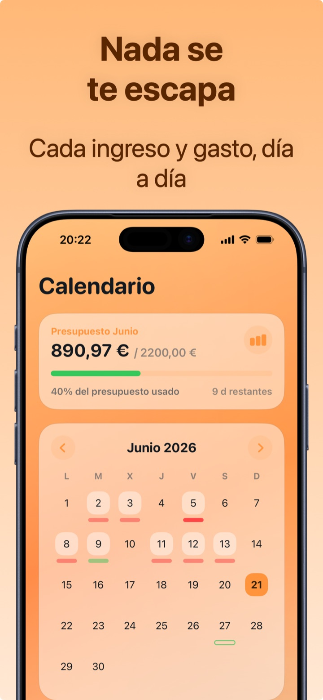

Presupuesto familiar: cómo hacerlo sin volverte loco
El presupuesto familiar es la fotografía de cuánto entra y cuánto sale en casa cada mes. No hacen falta ni contabilidad ni hojas de cálculo: hacen falta tres listas — ingresos, gastos fijos, gastos variables — y diez minutos a la semana.
La estructura: tres listas
- Ingresos: sueldos, posibles ingresos extra, ayudas. En una familia típica son 1-3 partidas estables.
- Gastos fijos: hipoteca o alquiler, facturas, seguros, cuotas, suscripciones, colegio. Son previsibles: se registran una vez y se actualizan rara vez.
- Gastos variables: compra, gasolina, farmacia, ocio, ropa. Aquí es donde se juega el presupuesto — y aquí hace falta el seguimiento diario.
La diferencia ingresos − fijos es el verdadero presupuesto mensual de la familia: lo que puedes asignar a los gastos variables y al ahorro.
Las categorías adecuadas para el hogar
Pocas y claras: Hogar (facturas, mantenimiento), Comida (compra y comidas fuera, o separadas si coméis fuera a menudo), Transporte, Salud, Hijos/Colegio, Ocio, Compras. Con más de 8-10 categorías la clasificación se vuelve un trabajo y la abandonas.
La rutina que lo mantiene vivo
- Cada día: quien hace la compra la registra al momento (2 segundos, también desde el widget).
- Cada semana: 5 minutos juntos en el calendario de gastos: ¿algo anómalo? ¿categorías que se disparan?
- Cada mes: comparación con el mes anterior y una decisión concreta: qué recortamos, qué está bien así, cuánto apartamos.

El error que hay que evitar
Contar solo los gastos grandes. En el presupuesto de una familia lo que se escapa son decenas de micro-gastos: meriendas, aparcamientos, recargas, compras online de menos de 20 €. Sumados, valen a menudo tanto como una factura. El presupuesto solo funciona si registra todo — por eso el registro debe costar dos segundos, no dos minutos.
Cómo llevar el presupuesto familiar con Crena
- Introduce los ingresos recurrentes (sueldos) y los gastos fijos (hipoteca, facturas, suscripciones) en los Recurrentes: se registran solos cada mes, con el impacto ya calculado.
- Fija el presupuesto mensual de la familia = ingresos − gastos fijos − ahorro deseado.
- Registra los gastos variables al momento, organizados por categoría (Hogar, Comida, Transporte…): la categoría se sugiere sola.
- Usa el Calendario para la revisión semanal: cada día muestra su neto y sus movimientos.
- A fin de mes, Estadísticas: comparación ingresos/gastos, categorías más pesadas y saldo de inicio/fin de mes. Con Premium exportas el extracto para el archivo de la familia.
Preguntas frecuentes
¿Cada cuánto hay que actualizar el presupuesto familiar?
¿Hace falta una cuenta separada para los gastos del hogar?
¿Cómo implico a mi pareja?
Prueba Crena gratis
Gastos en dos segundos, presupuesto mensual y estadísticas claras. Sin registro y sin vincular la cuenta.
Descargar enApp Store